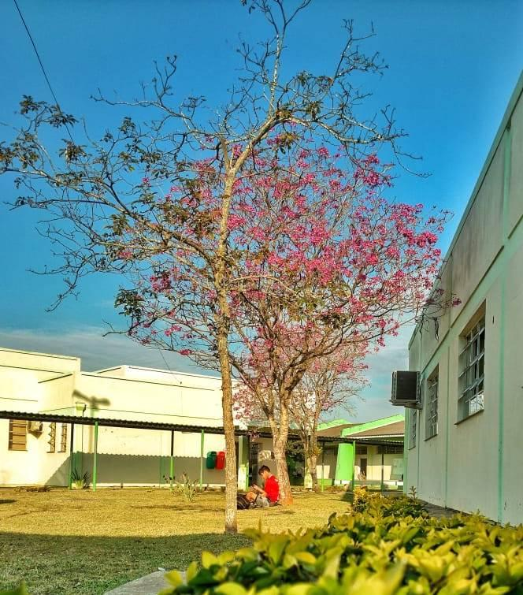
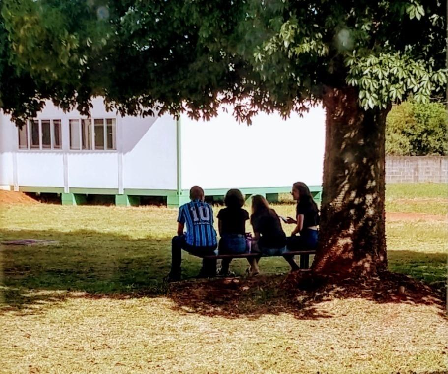

Um lugar onde se produzem relações sociais, memórias, afetos, conhecimento...
Um lugar de estudar, conversar, socializar…
Um lugar de…

Estar só
Foto: Vinicius Borba

Estar junto
Foto: Elizabete Kowalski
“a escola [...] como espaço de encontro, de conversa, de diversão, de sociabilidade, sendo, muitas vezes o “único” lugar possível para expressividades de si, nas quais a presença e o olhar do outro se torna fundamental” (GARBIN e TONINI, 2012, pg. 15)